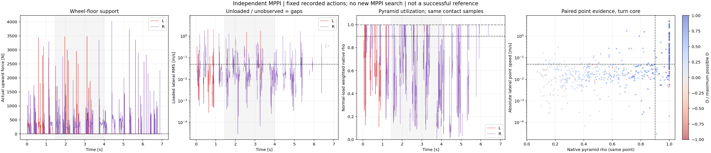
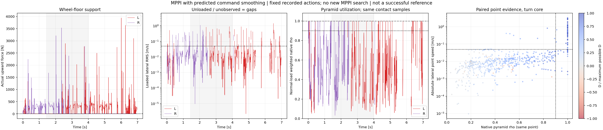

Fixed MPPI actions, original rigid cylinders, μ=0.7 and400Hz native MuJoCo. This is a re-analysis of both failed candidates, not new controller development. Both continuous replays reproduce archived qpos,qvel and wheel-floor Fz exactly. Material-point velocities are independently checked against their MuJoCo point Jacobians.
Each point carries its own paired normal/tangential force, velocity, actual contact friction coefficients and geometry ordering. We do not combine a wheel's maximum cone utilization at one point with a large velocity at another point.
Native condim3 pyramid: rho = |Ft1|/(mu1 Fn) + |Ft2|/(mu2 Fn) <= 1 Margin to native boundary = 1-rho Dissipated friction power: D = -(Ft1 vt1 + Ft2 vt2) Maximum power over this diamond: Dmax = Fn max(mu1 |vt1|, mu2 |vt2|) eta = D/Dmax (undefined for zero tangential velocity)
Dmax is our direct derivation from the documented pyramid edges. This is a hard-cone benchmark, not an equality assumed for MuJoCo soft contact. The circular L2 ratio is retained for comparison, but the actual pyramid has a different boundary. Antiparallel force and velocity are not required by a pyramid.
Joint evidence: wheel summed Fz>5N,base COM speed≥0.25m/s; eligible points have Fn>5N. At the same points,|lateral velocity|>0.05m/s,rho≥0.9,D>0 and eta≥0.5. These matched points must account for at least50% of eligible wheel normal load. A sustained event requires the same wheel to satisfy this continuously for at least50ms. Contact-point identity may change during rolling; unsupported gaps and alternating wheels are never stitched together.
Velocity-based sliding remains a measured kinematic label even when the force corroboration is absent. We separately report near-boundary sliding,interior-cone sliding,and dissipation evidence rather than calling interior-cone motion impossible. Sensitivity spans velocity0.02/0.05/0.1m/s,rho0.8/0.9/0.95 and duration20/50/100ms; eta and matched-load fraction remain fixed.
| Attempt | Wheel | Valid supported moving samples | Velocity-only sliding | Joint corroborated | Longest joint [ms] | Events≥50ms | Sliding-point load near cone AND dissipative |
|---|---|---|---|---|---|---|---|
| Independent MPPI | L | 29 | 82.8% | 69.0% | 2.5 | 0 | 79.4% |
| Independent MPPI | R | 546 | 20.0% | 13.2% | 7.5 | 0 | 63.1% |
| MPPI with predicted command smoothing | L | 353 | 11.9% | 9.6% | 5.0 | 0 | 83.8% |
| MPPI with predicted command smoothing | R | 253 | 11.5% | 10.7% | 5.0 | 0 | 93.4% |
Wheel percentages use valid wheel-time samples. The last column is normal-load weighted over laterally sliding point samples; it is a different denominator. Statistics cover1.44–4.00s. All point arrays retain weak positive contacts; only the primary estimator excludes Fn≤5N.
Neither fixed attempt is a successful stable-contact drift demonstration. Force-velocity consistency is additional evidence, not a replacement for full-body stability or proof of real tire behavior.

Analysis and threshold sensitivity · All actual point samples · Wheel timelines

Analysis and threshold sensitivity · All actual point samples · Wheel timelines
Original trajectories and fixed-camera videos · Full audit · MuJoCo primary documentation · Pinned3.8.1 native cone conversion
python scripts/analyze_mppi_friction_evidence.py --output-dir results/mppi_friction_evidence_reproduction